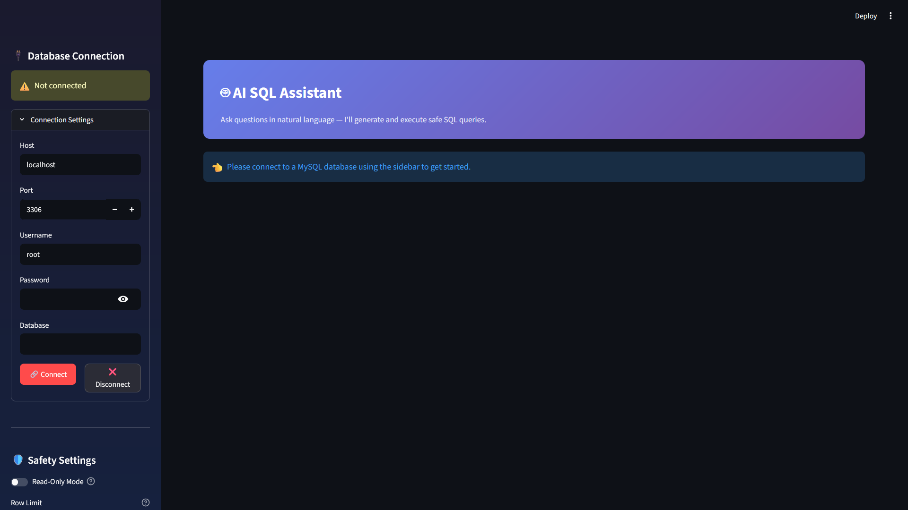

Ask your database questions in plain English — get safe, accurate SQL queries generated and executed instantly.

Non-technical users — business analysts, managers, product teams — need to query databases daily but don't know SQL. Existing solutions are either cloud-based (data privacy concerns) or lack safety guardrails, making it risky to let an AI execute arbitrary queries against production databases.
A fully local AI assistant that runs on your machine — no data leaves your network. Users type questions in plain English, the LLM generates SQL, and a tiered safety system classifies, validates, and optionally blocks dangerous queries before they ever touch the database.
Type questions like "Show all employees in engineering" and get precise SQL generated automatically.
Destructive queries (DROP, TRUNCATE, DELETE without WHERE) are automatically blocked. Write operations require confirmation.
UPDATE/INSERT operations show the affected row count and ask for explicit approval before execution.
Every query attempt — allowed, blocked, or confirmed — is logged with timestamps for full accountability.
One toggle to restrict all operations to SELECT queries only. Perfect for safe data exploration.
Failed queries are automatically corrected. The LLM understands your table schemas, columns, and relationships.
agent.py — LLM agent that converts natural language → SQL via LangChaindatabase.py — MySQL connection management with SQLAlchemyschema.py — Auto-introspects table schemas so the LLM knows your data structurequery_explainer.py — Translates generated SQL back to plain Englishclassifier.py — Categorizes queries as READ / WRITE / DESTRUCTIVEguard.py — Safety gate that blocks, confirms, or allows based on classificationsanitizer.py — Input sanitization to prevent injectionaudit.py — Logs every query attempt with timestamps and outcomesSafe Query Execution
SELECT queries execute immediately with results displayed in a clean table format with CSV export option.
Destructive Query Blocked
DROP TABLE, TRUNCATE, and unscoped DELETE queries are automatically blocked with a warning message.
Write Confirmation
UPDATE and INSERT operations show the affected row count and require explicit user approval before executing.
Ollama (Mistral 7B)
LangChain
MySQL + SQLAlchemy
Streamlit
sqlparse + regex
Python 3.11+
Smaller LLMs can hallucinate column names or generate invalid syntax. Solved this by feeding the full database schema into the system prompt, so the model always knows the exact table and column names available. Added auto-retry logic that catches SQL errors and asks the LLM to self-correct.
Too many confirmation dialogs frustrate users; too few create risk. The tiered approach (allow/confirm/block) based on SQL classification strikes the right balance — reads are instant, writes need one click, and destructive operations are impossible.
Unlike cloud-based solutions (OpenAI API), running Ollama locally means zero data exposure but requires handling model loading times, GPU memory management, and graceful fallbacks when the model server is unavailable.